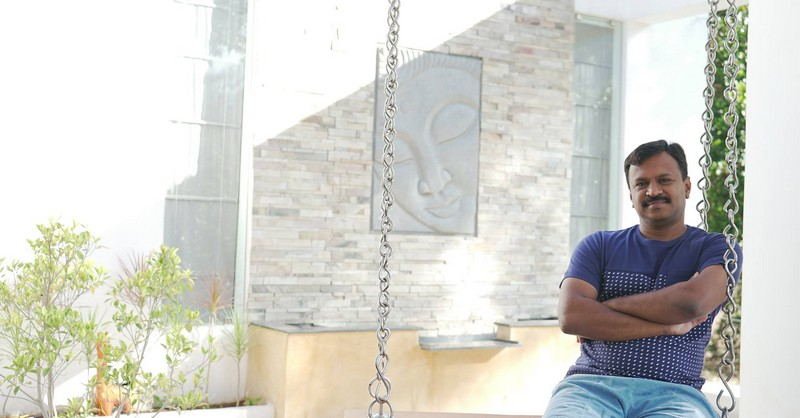

About Velan Kaappi
Re-defining the Kaappi Culture!

COFFEE MAKES THE MOMENTS COMPLETE
At Velan Kaappi, we have not only mastered the artistry and
technique that go into preparing the traditional South-Indian
drip coffee, but have redefined the ultimate traditional filter
‘ Kaappi ’ of the 80’s that manifested as a widespread cultural
icon in South India. Our quick-service cafes will soon bring the
Kaappi culture close to your homes by setting up store in your
neighborhood with the help of our franchisee partners.

Vision & Mission
We love what we do and we work hard at how we do it.
VISION
To make Velan Kaappi synonymous with South- Indian Traditional filter Coffee. MISSION To serve an authentic cup of admirable filter coffee, exclusively through our franchisee partners with the help of our valuable employees to
our prestigious customers – the taste discerning, coffee connoisseurs and the occasional coffee drinkers, alike. CORE VALUE To make available, a perfect cup of filter Kaappi to the mass population of India, by mastering the art of making authentic filter kaappi
and efficiently establishing QSR type retail chain stores across the country. We would like to achieve this feat while improving the quality
of life and work experience for our franchisee partners and employees.
Leadership

Premkumar,Founder&CEO
Prem is responsible for directing operational aspects of Velan Kaappi, vital to the overall growth
of the organization. He drives various internal teams and functions to achieve and excel the
company's sales, profitability, cash flow and business objectives.
His experience ranges from F&B to Real Estate and his key success has been his ability to identify
new business opportunities and successfully manage them.
It's Kaappi Time
You'll fall in love with our Kaappi at the first sip!
"The 21st century will determine if coffee joins wine as a noble beverage"
said some wise dude. In the recent years, the coffee culture has radically
transformed the lifestyle and habits around the world and is increasingly
expanding it's seductive spheres of influence.
At Velan Kaappi we celebrate the artistry and technique that go into
preparing the traditional South-Indian drip coffee.
Contact Us
☎ call us: 0422 4272392
✆ Customer Care: 90038 05005
✆ Franchise Enquiry: 77082 04466
✆ Outdoor Catering order: 73050 88875
ⓕ Follow us:facebook.com/velankaappi
✉ E-Mail:velankaappi@gmail.com/velankaappi
⚲ Meet us:108,Gandhi silai,Manamadurai,Sivagangai(dist)